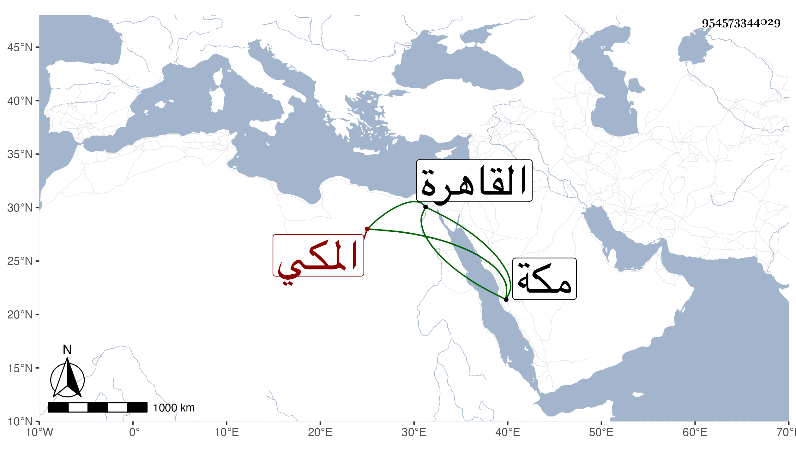

0902Sakhawi.DawLamic.ITO20230111-ara1.EIS1600.954573344029
Biography ID: 954573344029
5
أبو البركات بن الشيخ حسين بن حسن الكمال بن الفتحي المكي واسمه إسمعيل وكثيرا ما تحذف أداة الكنية فيقال بركات وهو شقيق أحمد ومحمد وذا أصغر الثلاثة وأحركهم . ولد في ذي القعدة سنة تسع وستين بمكة وقدم مع أبيه وبمفرده القاهرة غير مرة وسمع على بها وبمكة وليس بمرضي .
